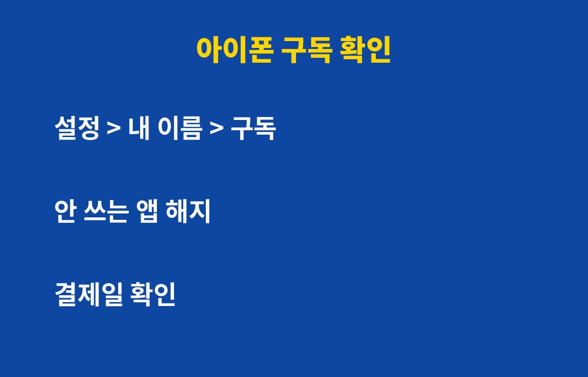

구독 자동결제는 앱스토어·플레이스토어 구독 목록 한 곳에서 1분 만에 전부 확인하고 끊을 수 있어요. 스마트폰으로 앱을 쓰는 분이라면 누구나 해당되는데, 그런데 무작정 다 해지하면 오히려 손해를 볼 수 있어요. 이유는 아래에 있어요.
내가 어떤 구독에 가입했는지 정말 다 알고 있을까요?
무료체험으로 시작한 앱이 어느 날 유료로 바뀌어 결제되는 경우가 정말 많아요. 영상, 음악, 클라우드 저장공간, AI 서비스, 게임 패스까지 하나하나는 금액이 작아 보여도 합치면 꽤 큰 고정 지출이 돼요.
특히 결제 알림 문자를 꺼두었거나 카드 사용 내역을 자세히 보지 않는 분은 몇 달째 쓰지 않는 구독이 빠져나가고 있을 수 있어요. 가입한 기억이 없는 항목이 보인다면 일단 결제 내역부터 열어보세요.
아이폰과 갤럭시, 구독 목록은 어디서 볼까요?
아이폰은 설정에서 내 이름을 누르고 구독 메뉴로 들어가면 돼요. 현재 활성 구독과 만료된 구독이 나뉘어 보이고, 항목을 눌러 구독 취소를 선택하면 끝이에요.

갤럭시 같은 안드로이드 폰은 구글 플레이스토어 앱에서 오른쪽 위 프로필을 누르고 결제 및 구독, 구독 순서로 들어가요. 여기서 정기결제 항목을 눌러 해지하면 돼요.
| 구분 | 확인 경로 | 해지 방법 |
| 아이폰 | 설정 > 내 이름 > 구독 | 항목 선택 후 구독 취소 |
| 갤럭시·안드로이드 | 플레이스토어 > 프로필 > 결제 및 구독 | 항목 선택 후 구독 해지 |
| 앱 자체 결제 | 해당 서비스 홈페이지 계정 메뉴 | 서비스 내 해지 메뉴 |
앱을 지우면 구독도 같이 끊길까요?
아니에요. 이게 가장 많이 하는 실수예요. 앱을 삭제해도 구독은 그대로 유지되고 결제일이 오면 돈이 빠져나가요. 반드시 구독 메뉴에서 해지를 눌러야 해요.
또 하나, 해지해도 이미 낸 기간은 보통 만료일까지 쓸 수 있어요. 그래서 결제일 직전에 급하게 해지하기보다 가입하자마자 해지를 눌러두는 방법도 있어요. 사용은 끝까지 하면서 자동 연장만 막는 거예요.
다 끊는 게 정답일까요, 남겨야 할 구독은?

최근 한 달 동안 한 번도 열어보지 않은 앱은 해지 1순위예요. 반대로 매일 쓰는 서비스인데 월 결제보다 연 결제가 저렴하다면 갈아타는 게 이득일 수 있어요. 단, 연 결제는 한 번에 큰돈이 나가니 정말 오래 쓸 서비스에만 고르세요.
가족 공유나 묶음 요금제가 있는지도 확인해보세요. 같은 서비스를 가족이 따로 결제하고 있다면 하나로 합쳐 아낄 수 있어요. 마지막으로 한 달에 한 번, 구독 목록을 열어보는 날을 정해두면 새는 돈을 확실히 막을 수 있어요.
오늘 알려드린 방법이 도움이 되셨다면 구독과 공감 부탁드려요. 다음에도 생활에 바로 쓰이는 IT 꿀팁으로 찾아올게요.
기사·공식 발표 기준이며 출시·가격 정보는 바뀔 수 있어요.